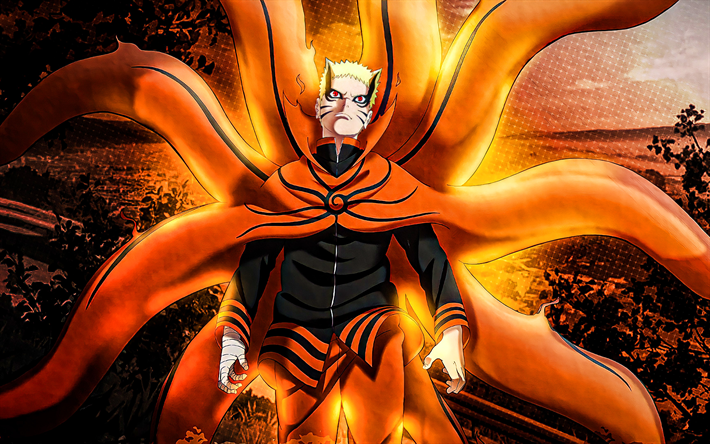
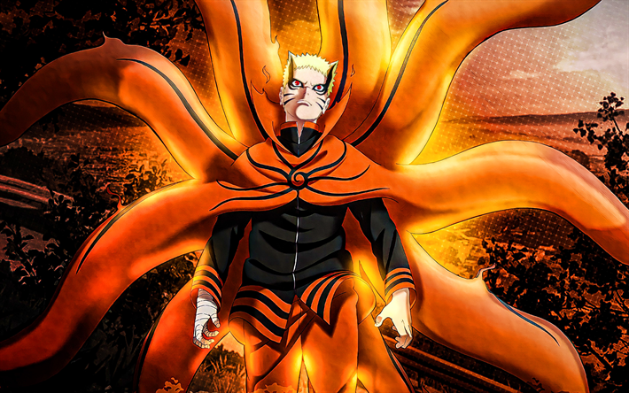

develop your creativity
upload and view your art
UPLOADupload and view your art
UPLOADI AM PRASHANT ACHARYA"A IT STUDENT FROM NEPAL" WHO IS INTERESTED IN BUILDING WEBSITE,PROGRAMMING,ANDROID-DEVELOPMENT,TRANSLATION/TRANSCRIPTING AND VARIOUS OTHER TECH-RELATED WORKS.BESIDE ALL OF THESE,I THINK MYSELF AS A "OTAKU" THAT MEANS A HUGE ANIME ADDICTED PERSON.I GENERALLY PREFER ANIME BECAUSE ITS BETTER THAN ANNY REAL-FICTION MOVIES OR ANY KINDS OF DRAMA.ANIME IS THE WAY OF HAPPINESS FOR ME.I AM IN MY HIGH SCHOOL SO ITS GENERAL FOR ME TO BE ADDICT IN SUCH KIND OF THING.

web developer
Anime is a term for a style of Japanese comic book and video cartoon animation in which the main characters have large doe-like eyes. Many Web sites are devoted to anime. Anime is the prevalent style in Japanese comic books or manga .
In Japan, though, animated shows are made for people of all ages, and it's commonplace for people in their 40s, 50s, and beyond to have favorite anime characters and shows.
Japanese anime is different from cartoons. While both are caricatures that may be animated, anime usually has visually distinct features for characters, and a more "limited animation" style for depicting movement.
I AM GOING TO SHOW YOU THE BEST ANIME THAT EVER EXISTS.I HAVE PERSONALLY WATCH ALL THE ANIME THAT I AM GOING TO MENTION HERE SO I CAN GIVE YOU 100% OF GUARANTEE THAT YOU WILL LOVE THE ANIME I AM MENTIONING FOR SURE.

 
